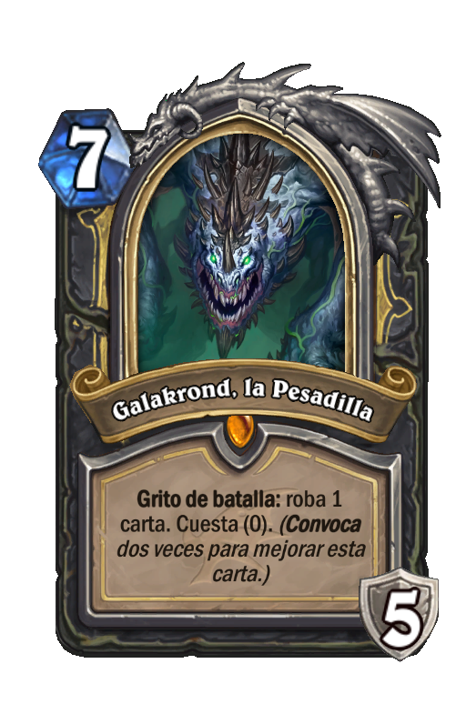

|
Mejores Decks
|
|

|
Los mazos son una parte esencial del juego, ya que de eso se trata: crear el mejor mazo
capaz de alcanzar leyenda.
En esta seccion te presentaremos algunos de los mejores mazos del meta actual.
El meta es, la corriente/estilo de juego que es popular en el momento y que es
impulsado por los desarrolladores, este cambia con cada expansion para mantener
un aire de frescura.
Galakrond Rogue
Galakrond rogue se centra alrededor de esta carta de heroe, galakrond.
Se utilizan cartas de eliminacion para mantener el tempo que se gana al inicio
del juego, para poder llegar a galakrond y togwaggle y asi sabotear el deck enemigo
y dejarlo sin opciones.

Tempo warrior
Tempo warrior es un deck agresivo, que se basa en la habilidad de no dejar descansar al enemigo
la clave es siempe tener algo en tablero, y utilizar cartas que sigan una buena curva de mana.
Lo malo es que es un deck que rapidamente se queda sin combustible, asi que se deben tomar buenas
deciones sobre lo que es mejor en cada situacion para poder atacar al heroe.

Highlander Mage
Highlander Mage es un deck unico por asi decirlo, no utiliza cartas repetidas, todas son diferentes.
y se utiliza la mecanica highlander para sacar ventaja y usar cartas con habilidades unicas y poderosas.
es un deck de control y que muy probablemente siempre termine en fatiga. Siempre es hacer una mejor jugada que el enemigo
y contrarrestar todo lo que juega.
Contiene cartas muy poderosas como zephris, Reno the amazing y siamat.